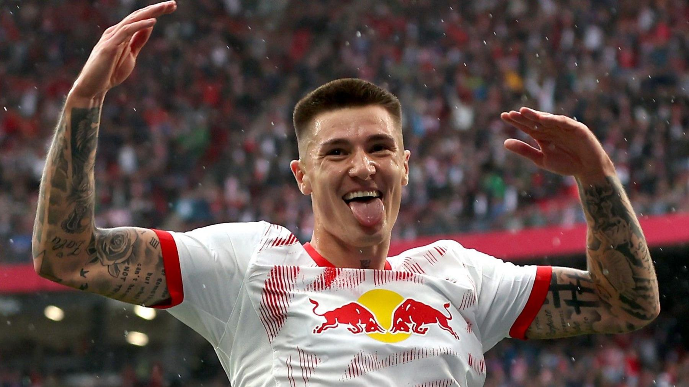

Will Benjamin Šeško Finally Join Manchester United?
August 2, 2025 • Premier League

The transfer rumor mill is heating up once again, and 21-year-old Slovenian striker Benjamin Šeško is making headlines. Manchester United have reportedly shown strong interest in the RB Leipzig forward, especially after the German club rejected a recent bid from Newcastle United.
Šeško has been one of the most promising young talents in Europe. Standing at 6'5", Šeško offers a unique blend of pace, aerial dominance, and off-the-ball intelligence that makes him a versatile attacking threat. In his debut Bundesliga season, he impressed with both his goalscoring efficiency and link-up play.
Leipzig are keen to hold on to their young star, especially after losing key players in recent windows. Still, Manchester United's need for a reliable striker could prompt an aggressive pursuit, particularly as they aim to rebuild under Rben Amorim.
Why Šeško Fits United's Needs
Šeško’s style of play could address several issues in United's current squad. His mobility and pressing ability would suit Amorim’s system, while his hold-up play could free up space for the team's latest additions: Matheus Cunha and Bryan Mbeumo. Moreover, his aerial prowess would give United an edge in set-piece situations—an area where they’ve lacked consistency.
As negotiations evolve, United fans will be watching closely. Šeško might not be the finished product just yet, but his potential and fit within United’s tactical setup make him a compelling option for the club’s future.